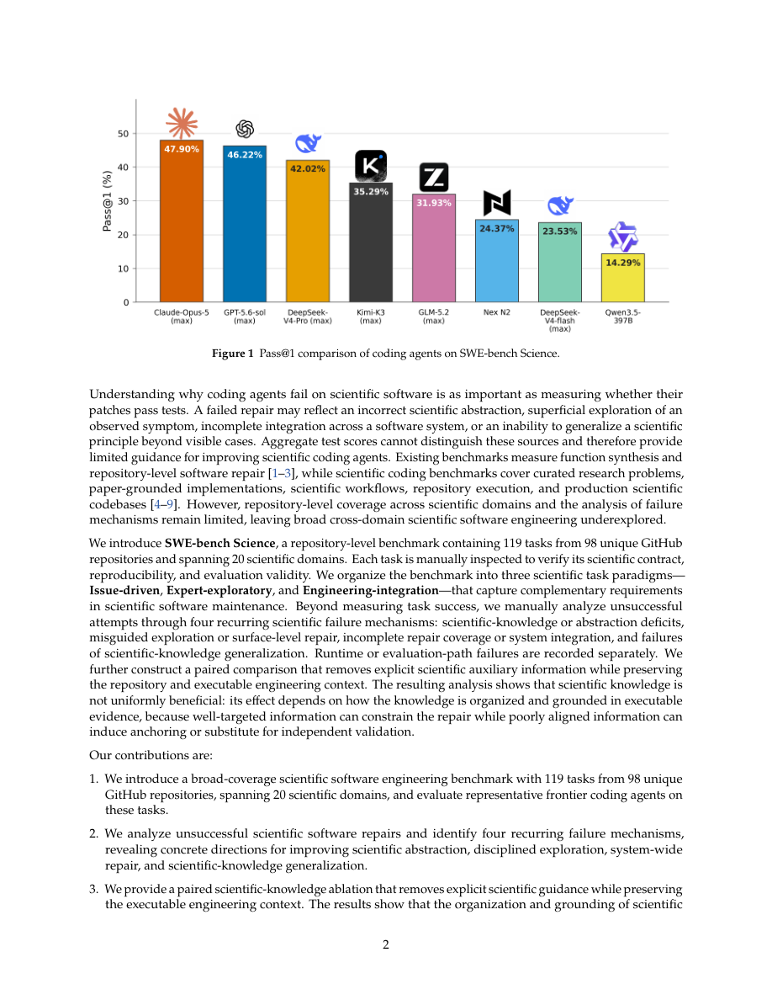

#1
★ 7/10
SWE-bench Science: Can Coding Agents Resolve Engineering Tasks in Science?
SWE-bench Science：编程智能体能解决科学工程任务吗？

图 Figure · Page 2 of paper
🎯 新基准揭示：最强AI编程智能体修科学代码错误仍超半数失败
A new benchmark reveals that even the best AI coding agents fail more than half the time on real scientific software bugs.
🗣️ 一句话比喻 · Plain-English Analogy就像请一个很厉害的全能修理工来修一台精密科学仪器——他工具用得很溜，但如果不懂仪器背后的科学原理，只是把表面的零件换了，实验还是会出错，结果一塌糊涂。Think of it like hiring a brilliant all-around handyman to fix a specialized piece of lab equipment — they might know tools really well, but if they don't understand the science behind the machine, they'll patch the wrong part and the experiment will still give you garbage results.
| 维度 | 中文 | English |
|---|---|---|
| ❓ 待解决 的问题 |
AI编程智能体越来越擅长修复普通软件的漏洞，但科学研究也依赖大量专业代码——比如气候模型、基因组分析或物理仿真程序。这些代码出错，科学结论就可能跟着出错。现有的AI编程测试不考察科学软件，所以我们根本不知道这些智能体在真正的科研场景下到底可不可靠。 | AI coding agents are getting good at fixing everyday software bugs, but science runs on specialized code too — think climate models, genomics pipelines, or physics simulations. When that code breaks, wrong science can follow. Existing tests for AI coders don't measure how well they handle scientific software, so we have no idea how reliable these agents really are when the stakes involve real research conclusions. |
| 💡 解决 的亮点 |
• 首个专门针对科学软件工程的基准测试，覆盖20个科学领域、98个GitHub仓库、119个真实修复任务。• 设计三种任务范式：用户反馈的Issue、专家探索性任务、跨系统工程集成，模拟真实科研场景。• 发现"科学知识"是把双刃剑：准确的知识能提升修复效果和效率，但错误对齐的知识会让智能体陷入"锚定效应"，反而变得更差。 | • First benchmark specifically targeting scientific software engineering, spanning 119 real bug-fix tasks from 98 GitHub repos across 20 scientific domains. • Three task types capture different real-world scenarios: user-reported issues, expert-crafted explorations, and cross-system integration challenges. • Reveals that scientific knowledge can be a double-edged sword: good guidance helps agents fix bugs faster and cheaper, but bad guidance actually makes agents worse by anchoring them to wrong assumptions. |
| 🧪 实验 内容 |
研究团队在119个任务的SWE-bench Science基准上评测了多个顶尖AI编程智能体，包括Claude Code（Opus-4/5）等主流模型。任务来自98个GitHub仓库、横跨20个科学领域，分为三种范式。评测指标为pass@1（首次尝试修复成功率）。他们还进行了配对消融实验，去掉科学知识引导、仅保留代码工程上下文，以隔离领域知识的实际影响。 | The team evaluated several state-of-the-art AI coding agents — including Claude Code with Opus-4/5 and other leading models — on the 119-task SWE-bench Science benchmark. Tasks were drawn from 98 GitHub repositories spanning 20 scientific domains and organized into three paradigms (Issue-driven, Expert-exploratory, Engineering-integration). They measured pass@1 (whether the agent fixes the bug correctly on the first try). They also ran a paired ablation study removing explicit scientific guidance while keeping the code and engineering context intact, to isolate the effect of domain knowledge. |
| 📊 实验 结果 |
最强智能体Claude Code（Opus-5 max）的pass@1低于50%，即超过一半的科学代码漏洞它无法正确修复。研究归纳出四类反复出现的失败模式：缺乏领域知识、探索浅显或走错方向、修复不完整、无法举一反三。消融实验显示：对齐良好的科学知识能提升平均修复表现并节省token消耗，而对齐差的知识则会造成"锚定效应"，不能改善精确修复成功率。 | The best-performing agent, Claude Code with Opus-5 (max), achieved a pass@1 below 50% — meaning it fails to correctly fix scientific bugs more than half the time. Four recurring failure patterns were identified: lack of scientific domain knowledge, shallow/misguided code exploration, incomplete fixes that miss edge cases, and inability to generalize scientific reasoning to new situations. The ablation study showed that well-aligned scientific guidance improved average performance and reduced token usage, while poorly-aligned guidance caused anchoring effects and did not improve exact repair success rates. |
| 🏁 结论 | SWE-bench Science证明：当前最强的AI编程智能体在科学软件上还远不够可靠，即使是最顶尖的模型也有超过半数的任务失败；同时，领域知识的质量至关重要，用得好能提升表现，用得不好反而帮倒忙。这个基准为研究界提供了一个严格的测试平台，推动AI智能体在高风险科研计算中的进步。 | SWE-bench Science proves that today's best AI coding agents are not yet reliable enough for scientific software — even the top model fails over half the time — and that domain knowledge is a double-edged sword that can help or hurt depending on its quality. The benchmark offers the research community a rigorous testbed to study and improve AI agents for high-stakes scientific computing. |
| 🔗 论文 链接 |
arXiv: 2608.19799v1 · 📥 PDF | |
⚙️ Method · 方法详解
研究团队从真实科学GitHub仓库中精心筛选了119个修复任务，涵盖生物、天文、化学、物理等领域。每个任务都有问题描述、出错代码和验证修复是否成功的测试用例。他们让多个主流AI编程智能体来完成这些任务，记录成功率。此外，他们还做了一个"对照实验"：把同样的任务中的科学说明去掉，只保留代码和工程上下文，以此单独测量"科学知识"到底帮了多少忙，或者添了多少乱。
The researchers built SWE-bench Science by carefully curating 119 bug-fix tasks from real scientific GitHub repositories — covering fields like biology, astronomy, chemistry, and physics. Each task comes with a clear problem description, the broken code, and a test to check if the fix works. They then ran multiple leading AI coding agents on these tasks and measured how often they succeeded. They also ran a clever "ablation" experiment: they gave agents the same tasks but stripped out the scientific explanations, keeping only the raw code and engineering context. This let them isolate exactly how much the scientific knowledge actually helped (or hurt).
🌟 Why It Matters · 为什么重要
现代科学越来越依赖软件——从新药研发到气候预测——代码出错可能让多年研究付诸东流。这个基准敲响了警钟：AI编程工具在科研场景中还不够可信，同时也为未来的改进指明了方向。
Science increasingly depends on software — from drug discovery to climate modeling — and bugs in that software can invalidate years of research. This benchmark is a wake-up call showing that AI coding tools aren't yet trustworthy for scientific work, and it provides a clear roadmap for what needs to improve.